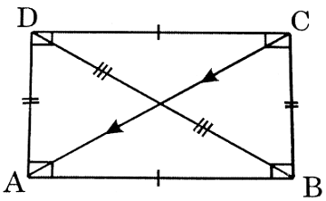

Types of Quadrilaterals
Parallelogram
A quadrilateral whose opposite sides are parallel.
Properties
-
The opposite sides are parallel and equal.
-
Opposite angles are equal.
-
Sum of any two adjacent angles is \( 180^{\circ} \) .
-
Diagonals bisect each other.
-
Diagonals need not be equal in length.
-
Diagonals need not bisect at right angle.
-
Diagonals need not bisect angles at the vertices.
-
Each diagonal divides a parallelogram into two congruent triangles.
-
Lines joining the mid-points of the adjacent sides of a quadrilateral form a parallelogram.
-
Lines joining the mid-points of the adjacent sides of a parallelogram is a parallelogram.
-
The parallelogram that is inscribed in a circle is a rectangle.
-
The parallelogram that is circumscribed about a circle is a rhombus.
-
\( \begin{align} (AC)^2 + (BD)^2 = (AB)^2 + (BC)^2 + (CD)^2 + (AD)^2 \\\\[3pt]
= 2(AB^2 +BC^2) \end{align} \)
-
Parallelogram that lie on the same base and between the same parallel lines are equal in area.
-
A parallelogram is a rectangle if its diagonals are equal.
Rectangle
A parallelogram in which all the four angles at vertices are right (i.e., \( 90^{\circ} \) ), is called a rectangle.
Properties
-
Opposite sides are parallel and equal.
-
Opposite angles are equal and of \( 90^{\circ} \) .

-
Diagonals are equal and bisect each other, but not necessarily at right angles.
-
When a rectangle is inscribed in a circle, the diameter of the circle is equal to the diagonal of the rectangle.
-
For the given perimeter of rectangles, a square has maximum area.
-
The figure formed by joining the mid-points of the adjacent sides of a rectangle is a rhombus.
-
The quadrilateral formed by joining the mid-points of intersection of the angle bisectors of a parallelogram is a rectangle.
-
Every rectangle is a parallelogram.
Rhombous
A parallelogram in which all sides are equal, is called a rhombus.
Properties
-
Opposite sides are parallel and equal.
-
Opposite angles are equal.
-
Diagonals bisect each other at right angle, but they are not necessarily equal.
-
Diagonals bisect the vertex angles.
-
Sum of any two adjacent angles is \( 180^{\circ} \) .
-
Figure formed by joining the mid - points of the adjacent sides of a rhombus is a rectangle.
-
A parallelogram is a rhombus if its diagonals are perpendicular to each other.
Square
A rectangle whose all sides are equal or a rhombus whose all angles are equal is called a square. Thus each rhombus is a parallelogram, a rectangle and a rhombus.
Properties
-
All sides are equal and parallel.
-
All angles are right angles.
-
Diagonals are equal and bisect each other at right angle.
-
The figure formed by joining the mid-points of the adjacent sides of a square is a square.
-
Area = \( \begin{align} (side)^2 \\\\[3pt]
= a^2 = \frac{(diagonal)^2}{2} = \ \frac{d^2}{2} \end{align} \)
-
Diagonal = side = \( \sqrt{2} = a \ \sqrt{2} \)
-
Perimeter = 4 \( \times \) side = 4a
Trapezium
A quadrilateral whose only one pair of sides is parallel and other two sides are not parallel.
Properties
-
The line joining the mid-points of the oblique (non-parallel) sides is half the sum of the parallel sides and is called the median.
(i.e., Median = \( \frac{1}{2} \ \times \ sum \ of \ sides \)
\( = \frac{1}{2} \times (AB + DC) = EF) \)
-
If the non-parallel sides are equal, then the diagonals will also be equal to each other.
-
Diagonals intersect each other proportionally in the ratio lengths of parallel sides.
-
By joining the mid-points of adjacent sides of a trapezium, four similar triangles are obtained.
-
If a trapezium is inscribed in a circle, then it is an isosceles trapezium with equal oblique sides.
-
\( AC^2 + BD^2 = BC^2 + AD^2 + 2AB + 2AB . CD \)
Kite
In a kite two pairs of adjacent sides are equal.
Properties
-
AB = BC and AD = CD.
-
Diagonals intersect at right angles.
-
Shorter diagonal is bisected by the longer diagonal.
| S.NO |
Property |
Parallelogram |
Rectangle |
Rhombus |
Square |
| 1 |
Opposite sides are equal |
Correct |
Correct |
Correct |
Correct |
| 2 |
All sides are equal |
Wrong |
Wrong |
Correct |
Correct |
| 3 |
Opposite sides are equal |
Correct |
Correct |
Correct |
Correct |
| 4 |
Opposite angles are equal |
Correct |
Correct |
Correct |
Correct |
| 5 |
All angles are equal and right angle |
Wrong |
Correct |
Wrong |
Correct |
| 6 |
Diagonals bisect each other |
Correct |
Correct |
Correct |
Correct |
| 7 |
Diagonals bisect each other at right angles |
Wrong |
Wrong |
Correct |
Correct |
| 8 |
Diagonals bisect vertex angles |
Wrong |
Wrong |
Correct |
Correct |
| 9 |
Diagonals are equal |
Wrong |
Correct |
Wrong |
Correct |
| 10 |
Diagonals form four triangles of equal area |
Correct |
Correct |
Correct |
Correct |
| 11 |
Diagonals form four congruent triangles |
Wrong |
Wrong |
Correct |
Correct |
Polygon
A closed plane figure bounded by line segments is called a polygon.
The line segments are called its sides and the points of intersection of consecutive sides are called its vertices. An angle formed by two consecutive sides of a polygon is called an interior angles or simply an angle of the polygon.
| Number of sides |
Name |
| 3 |
Triangle |
| 4 |
Quadrilateral |
| 5 |
Pentagon |
| 6 |
Hexagon |
| 7 |
Heptagon |
| 8 |
Octagon |
| 9 |
Nonagon |
| 10 |
Decagon |
A polygon is named according to the number of sides, it has.
In general, a polygon of "n" sides is called n-gon. Thus, a polygon having 18 sides is called 18 - gon.
Diagonal of a polygon
Line segment joining any two non-consecutive vertices of a polygon is called its diagonal.
Convex polygon
If all the (interior) angles of a polygon are less than \( 180^{\circ} \) , it is called a convex polygon. in the figure given below. ABCDEF is a convex polygon. In fact, it is a convex hexagon.
(In other words, a polygon is a convex polygon if the line segment joining any two points inside it lies completely inside the polygon).
Concave polygon
If one or more of the (interior) angles of a polygon is greater than \( 180^{\circ} \) i.e., reflex, it is
called concave (or re-entrant) polygon. In the figure given below, ABCDEFG is a concave polygon. In fact, it is a concave heptagon.
Exterior angle of Convex polygon
If we produce a side of polygon, the angle it makes with the next side is called an exterior angle. In the diagram given below, ABCDE is a pentagon. Its side AB has been producedto P, then \( \angle CBP \) is an exterior angle.
Note:
Corresponding to each interior angle, there is an exterior angle. Also, an exterior angle and its adjacent interior angle make a straight line, we have an exterior angle + adjacent interior angle = \( 180^{\circ} \)
Regular polygon
A polygon is called regular polygon if all its sides have equal length and all its angles have equal size.
Thus, in a regular polygon
-
all sides are equal in length.
-
all interior angles are equal in size.
-
all exterior angles are equal size.
Note: All regular polygons are convex.
Key Results to Remember
-
-
If there is a polygon of "n" sides (n \( \geq \) 3), we can cut it into (n - 2) triangles with a common vertex and so the sum of the interior angles of a polygon of "n" sides would be
(n - 2) \( \times \ 180^{\circ} \) = (n - 2) \( \times \) 2 right-angles
= (2n - 4) right angles
-
If there is a regular polygon of "n" sides (n \( \geq \) 3), then its each interior angle is equal to \( \left(\frac{2n-4}{n} \times 90 \right) \) .
-
Each exterior angle of a regular polygon of "n" sides is equal to \( \left(\frac{360}{n}\right)^{\circ} \)
-
The sum of all the exterior angles formed by producing the sides of a convex polygon in the same order is equal to four right angles.
-
Explanation
If in a convex polygon \( P_1 P_2 P_3 P_4 P_5 \) , all the sides are produced in order, forming exterior angles \( \angle 1,\angle 2,\angle 3,\angle 4 \ and \ \angle 5 \) , then \( \angle 1 + angle 2 + \angle 3 + \angle 4 + \angle 5 \) = 4 right angles.
-
If each exterior angle of a regular polygon is \( x^{\circ} \) , then the number of sides in the polygon = \( \frac{360^{\circ}}{x} \) .
Note: Greater the number of sides in a regular polygon, greater is the value of its each interior angle and smaller is the value of each exterior angle.
-
If a polygon has "n" sides, then the number of diagonals of the polygon = \( \frac{n(n-1)}{2} - n \) .
| No.of sides |
Polygon |
Sum of all the angles |
Each interior angle |
Each exterior angle |
No.of diagonals |
| 3 |
Triangle |
\( 180^{\circ} \)
|
\( 60^{\circ} \)
|
\( 120^{\circ} \)
|
0 |
| 4 |
Quadrilateral |
\( 360^{\circ} \)
|
\( 90^{\circ} \)
|
\( 90^{\circ} \)
|
2 |
| 5 |
Pentagon |
\( 540^{\circ} \)
|
\( 108^{\circ} \)
|
\( 72^{\circ} \)
|
5 |
| 6 |
Hexagon |
\( 720^{\circ} \)
|
\( 120^{\circ} \)
|
\( 60^{\circ} \)
|
9 |
| 7 |
Heptagon |
\( 900^{\circ} \)
|
\( {128 \frac{4}{7}}^{\circ} \)
|
\( {51 \frac{3}{7}}^{\circ} \)
|
14 |
| 8 |
Octagon |
\( 1080^{\circ} \)
|
\( 135^{\circ} \)
|
\( 45^{\circ} \)
|
20 |
| 9 |
Nonagon |
\( 1260^{\circ} \)
|
\( 140^{\circ} \)
|
\( 40^{\circ} \)
|
27 |
| 10 |
Decagon |
\( 1440^{\circ} \)
|
\( 144^{\circ} \)
|
\( 36^{\circ} \)
|
35 |
Some Important theorem statements
-
If one pair of opposite sides of a quadrilateral be equal and parallel, then other pair also be equal and parallel and hence the figure will be a parallelogram.
-
Any diagonal of a parallelogram divides it into two triangles of equal areas and the opposite sides, angles of a parallelogram are equal.
-
If the opposite sides of quadrilateral be equal, then it will be a parallelogram.
-
If the opposite angles of a quadrilateral be equal, it will be a parallelogram.
-
The diagonals of a parallelogram bisect each other.
-
If the diagonals of a quadrilateral bisect each other then it is a parallelogram.
-
The line segment joining the mid-points of any two sides of a triangle is parallel to and half of the third side.
-
The straight line drawn through the mid-point of a side of a triangle and parallel to another side bisects the remaining side, and the line segment is half the side to which it is parallel.
-
If the lengths of intercepts made by there of more parallel straight lines on a transversal are equal, then the lengths of intercepts made by them on any other universal are also equal.
-
Parallellograms on the same base and between same parallel are equal in area.
-
The area of triangle is half the area of a parallelogram standing on the same base and between same parallels.
-
Triangles on the same base and between same parallels are equal in area.
-
Triangles of equal areas on the same base and on the same side are between same parallels.
-
In a right-angle triangle the square described on the hypotenuse is equal to the sum of the squares described on the other two sides.
Solved examples
Example 1:
In the given figure, \( \triangle ABC \) is an obtuse triangle, obtuse angled at B. If AD \( \bot \ CB \) ,then prove that \( AC^2 = \ AB^2 + \ BC^2 + \ 2 BC.BD \)
Solution :
\( \begin{align} \triangle ADC \ \text{is a right triangle, right angled at D.} \\\\[3pt]
AC^2 = AD^2 + DC^2 \ \text{(By pythogoras theorem)} \\\\[3pt]
= AD^2 + (DB + BC)^2 \ \text{(since DC = DB + BC)} \\\\[3pt]
= AD^2 + DB^2 + BC^2 + 2DB.BC \\\\[3pt]
= AB^2 + BC^2 + 2BC.BD \ (since \ AD^2 + DB^2 = AB^2)
\end{align} \)
Example 2:
In figure \( \angle B \) of \( \triangle \ ABC \) is an acute angle and AD \( \pm \) BC. Prove that \( AC^2 = AB^2 + BC^2 - 2BC.BD. \)
Solution:
\( \begin{align}
\triangle \text{ADC is right triangle, right angled at D.} \\\\[3pt]
\therefore \ AC^2 = AD^2 + DC^2 \text{(By pythogoras theorem)} \\\\[3pt]
= AD^2 + (BC - BD)^2 (since DC = BC - BD) = AD^2 + BC^2 + BD^2 - 2BC.BD \\\\[3pt]
= AB^2 + BC^2 - 2BC.BD \ (since AD^2 + BD^2 = AB^2)
\end{align} \)
Example 3:
The sum of the squares of two sides of a triangle is equal to twice the square on half the third side plus twice the square on the median which bisects the third side (Appolonius theorem).
Solution:
\( \begin{align}
Given: \ \triangle \text{ABC with a median AD} \\\\[3pt]
R.T.P: \ AB^2 + AC^2 = 2 BD^2 + 2 AD^2 \\\\[3pt]
\text{Construction: Draw AN} \bot \text{BC to meet BC at N.} \\\\[3pt]
Proof: \\\\[3pt]
\text{Case (i): If}\angle \ ADB = \angle \text{ADC then they are right angles.} \\\\[3pt]
Here AB^2 = BD^2 + AD^2 \\\\[3pt]
AC^2 = CD^2 + AD^2 \\\\[3pt]
Adding \ AB^2 + AC^2 = BD^2 + CD^2 + 2AD^2 \\\\[3pt]
= 2 BD^2 + 2 AD^2 \text{(since BD = CD given)} \\\\[3pt]
\text{Case (ii): When } \angle ADB = \angle ADC \end{align} \)
One (say ADC) is obtuse and the other acute.
Since \( \angle ADB \) is obtuse, we have
\( AB^2 = BD^2 + AD^2 + 2BD.DN. ... (1) \)
Since \( \angle ADC \) is acute, we have
\( AC^2 = DC^2 + AD^2 - 2 DC.DN. ... (2) \)
But BD = DC (Given)
Adding (1) and (2) we get \( AB^2 + AC^2 = 2DB^2 + 2AD^2. \)
Example 4:
In \( \triangle \) ABC , the medians CD and BE are produced respectively to P and T such that CD = DP and BE = ET.
Show that the points P, A, T are collinear and that A is the mid-point of PT.
Solution:
First method:
Construction:
BP and CT are joined
AP and AT are also joined
Proof:
In \( \triangle \) ABC by hypothesis BE is the median which bisects AC i.e., AE = EC and BE = ET
In quad. ABCT, the diagonals AC and BT bisect each other
\( \therefore \) ABCT is a parallelogram
\( \therefore \) AT || BC
Similarly, APBC is a parallelogram
\( \therefore \) AP || BC
Now AP and AT are parallel to the same line BC and pass through the same point A.
Hence, AP and AT must lie on the same straight line
i.e., the points P, A, T are collinear.
Example 5:
In \( \triangle \) ABC, D and E are the mid-points of the sides AB and AC respectively. P and R are the mid-points of CD and BD respectively. Prove that BE and PR bisect each other.
Solution:
In \( \triangle \) CAD
E is the mid-point of CA
P is the mid-point of CD
\( \therefore \) PE ||AD i.e., parallel to RB and PE = \( \frac{1}{2} AD = \frac{1}{2} \) BD [since, R is the mid-point of BD]
\( \therefore \) PERB is a \( ||^{gm} \) .
\( \therefore \) The diagonals PR and BE bisect each other.
Hence it is proved.
Example 6:
ABCD and APCR are the two parallelograms with AC as the common diagonal. Prove that PBRD is a parallelogram.
Solution:
Construction:
Let the diagonal AC is drawn and "0", the mid-point of AC is taken. PR and BD are also joined.
Since ABCD is a parallelogram the diagonals AC and BD bisect each other at "O". That is, "O" is the mid-point of AC and also of BD.
Again, since APCR is a parallelogram, the diagonals AC and PR bisect each other.
\( \therefore \) "O" is the mid-point of PR [as "O" is the mid-point of AC]
Now, in quadrilateral PBRD, "O" is the mid-point of BD and also of PR. That is BD and PR bisect each other (at "O").
But they are the diagonals of quad PBRD.
Hence, PBRD is a parallelogram.
Hence it is proved.
Example 7:
ABCD is a parallelogram. AB and AD are produced to P and Q respectively such that BP = AB and DQ = AD. Prove that P, C, Q lie on a straight line.
Solution:
Construction
CP and CQ are joined
In triangles PBC and CDQ
BC = DQ[Since BC = AD opposite sides osf a paralelogram and AD = DQ by hypothesis]
BP = DC
\( \angle PBC = \angle CDQ \ [since, \angle ABC = \angle ADC \) ,
opp \( _{\angle}{^s} \) of a \( ||^{gm} \) and hence their supplementary angles are equal]
As are congruent (SAS congruency)
\( \Delta^s \) are congruent (SAS congruency)
\( \angle BPC = \angle DCQ \) and \( \angle BCP = \angle DQC \)
Again, \( \angle BCD = \ alt \angle PBC \) [since, AP || DC]
Now, \( \angle BCP + \angle BCD + \angle DCQ \)
= \( \angle BCP + \angle PBC + \angle BPC \) = 2 right angles
i.e., \( \angle PCQ \) is a straight angle.
i.e., P, C, Q lie on a straight line
Example 8:
ABCD is a parallelogram. BT bisects \( \angle ABC \) and meets AD at T. A straight line through C and parallel to BT meets AB produced at P and AD produced at R. Prove that \( \triangle RAP \) is isosceles and the sum of two equal sides of the \( RAP \) is equal to the perimeter of the parallelogram ABCD.
Solution:
\( \angle APR = \angle ABT \) [since, PR || BT and AP is transversal]
= \( \angle TBC \) [since, BT bisects \( \angle ABC \)
= \( \angle TRC \) [since, TBCR is a \( ||^{gm} \) as opposite sides are paralllel by hypothesis and hence opp. angles are equal]
i.e., \( \angle APR = \angle ARP \) [as \( \angle TRC \) and \( \angle ARP \) are same angles]
Hence, AP = AR
i.e., \( \triangle APR \) is isosceles.
Again, \( \angle TBC = \ alt \angle BCA \) [as BT I PC and BC is the transversal]
But, \( \angle TBC = \angle ABT = \angle BPC \) [proved earlier]
\( \therefore \ \angle BCA = \angle BPC \)
i.e. BC = BP
And \( \angle APC = \angle DCR \) [since, AP || DC and PR cuts them]
\( \therefore \angle DCR = \ \angle DRC \) [since, \( \angle APR = \angle ARP \) , proved earlier]
i.e., CD = DR
Hence, AP + AR = (AB + BP) + (AD + DR)
= (AB + BC) + (AD + CD)
= Perimeter of \( ||^{gm} \) ABCD
Hence it is proved.
Example 9:
Prove that the quadrilateral formed by the bisectors of the four angles of a parallelogram is a rectangle.
Solution:
ABCD is a parallelogram. The bisectors of the angles A, B, C, D make the quad. PQRS.
It is required to prove that PQRS is a rectangle.
In \( \triangle ABQ \)
\( \angle BAQ + \angle ABQ = \frac{1}{2} \ \angle BAD + \frac{1}{2} \ \angle ABC \)
= \( \frac{1}{2}(\angle BAD + \angle ABC) \)
= \( \frac{1}{2} (180^{\circ}) = 90^{\circ} \)
\( \therefore \angle AQB = 90^{\circ} \)
\( \therefore \) vert opp \( \angle PQR = 90^{\circ} \)
Similarly in ACDS, \( \angle CSD = 90^{\circ} \)
Vert opp. \( \angle PSR = 90^{\circ} \)
In the same way, \( \angle BPC \) of \( \triangle BPC \) is \( 90^{\circ} \) and \( \angle ARD \) of \( \triangle ARD \) So, PQRS is rectangle (since, each of the 4 angles is \( 90^{\circ} \) )
Example 10:
Prove that the straight line joining the mid-points of the two oblique sides of a trapezium is parallel to the parallel sides and is equal to half of the sum of the two parallel sides.
Solution:
X and Y are the mid-points of the oblique sides AB and DC of the trapezium ABCD.
It is required to prove that XY || AD || BC and XY = \( \frac{1}{2} (AD + BC) \)
Construction:
AY is joined and produced to meet BC produced at E.
Solution:
In \( \Delta^s ADY \) and CEY
DY = CY (by hypothesis)
\( \angle ADY = \ alt \angle YCE \) [AD || CE]
\( \angle AYD = \angle CYE \) (vertically opposite angles)
\( \therefore \ \Delta^s \) are congruent
\( \therefore \) AD = CE and AY = YE
Now in \( \triangle ABE \) ,
X is the mid-point of AB (by hypothesis)
Y is the mid-point of AE (AY = YE)
XY || BE i.e., XY || BC (BC is a part of BE) and XY = \( \frac{1}{2} \) BE
= \( \frac{1}{2} \) (BC + CE) = \( \frac{1}{2} \) (BC + AD)
Example 11:
\( \angle A \) of the \( ||^{gm} \) ABCD is obtuse. Two equilateral \( \Delta^s \) ABP are ADQ and drawn outside the \( ||^{gm} \) . Prove that \( \triangle CPQ \) is equilateral.
Solution:
In \( \Delta^s \) PBC and CDQ, PB = DC [since, PB = AB, sides of equilateral triangle and AB = DC, opp. sides of \( ||^{gm} \)
BC = DQ [since, BC = AD, opp. sides of \( ||^{gm} \) ]
AD = DQ sides of equilateral triangle
\( \angle PBC = \angle CDQ \ [ \angle PBC = \angle PBA + \angle ABC] = 60^{\circ} + \angle ABC \) and
\( \angle CDQ = \angle ADQ + \angle ADC = 60^{\circ} + \angle ADC = 60^{\circ} \ \angle ABC \) , as \( \angle ABC \) and \( \angle ADC \) opposite angles of a \( ||^{gm} \)
\( \Delta^s \) are congruent
\( \therefore \) PC = CQ \ .....(i)
Again, in As APQ and PBC
PB = AP [since, sides of an equilateral triangle]
BC = AQ [since, BC = AD, opp. sides of a \( ||^{gm} \) and AD = AQ sides of an equilateral triangle]
\( \angle PAQ = 360^{\circ} - (\angle PAB + \ \angle QAD + \ \angle BAD) \)
= \( 360^{\circ} - (60^{\circ} + 60^{\circ} + \angle BAD) \)
= \( 240^{\circ} - \angle BAD \)
= \( 240^{\circ} - (180^{\circ} - \ \angle ABC) = \ 60^{\circ} + \ \angle ABC = \ \angle PBA + \angle ABC = \ \angle PBC \)
\( \therefore \triangle^s \) are congruent \( \therefore PC = PQ \ ......(ii) \)
\( \therefore \) Combining (i) and (ii) PC = CQ = PQ
i.e., the \( \triangle CPQ \) is equilateral.
Example 12:
Prove that the area of the square is greater than the area of the rhombus standing on the same base.
Solution:
ABCD is a square and ABEF is a rhombus on the same base AB.
It is required to prove that the area of the square ABCD is more than that of the rhombus ABEF.
Construction
FX \( \bot AB \) is drawn
Solution:
Now in \( \triangle FAX, \angle FXA = 90^{\circ} \)
\( \therefore \) FA is the hypotenuse
\( \therefore \) FA > FX (since, hypotenuse is the greatest side in a rt. angled-triangle)
\( \therefore \) DA > FX (since, FA = AB = DA)
\( \therefore \) AB.DA > AB. FX (multiplying both s ides by AB)
\( \therefore \) Area of the square > area of the rhombus
Example 13:
D is any point on the side BC of pABe. The straight lines drawn through "D" parallel to CA and BA, intersect BA and CA at the points E and F respectively. Prove that \( \triangle FBD = \triangle EDC \) in area.
Solution:
Since, DE I I CA and DF I I BA (by hypothesis)
\( \therefore \) AEDF is a parallelogram.
Now, \( \triangle \) FBD and \( ||^{gm} \) AEDF are on the same base DF and between same parallels AB and FD.
\( \triangle FBD = \frac{1}{2} ||^{gm} \ AEDF(in area) \)
Again, AEDC and \( ||^{gm} AEDF \) are on the same base DE and between same parallels AC and ED.
\( \triangle AEDC = 2 ||^{gm} AEDF \) (in area)
Hence, combining these two results,
\( \triangle FBD = \ \triangle EDC (in area) \)
Example 14:
P is any point on the diagonal BD of the parallelogram ABCD. Prove that \( \triangle APD = \triangle CPD \) in area.
Solution:
Construction
The diagonals BD and AC intersect each other at "O".
Since, the diagonals of a parallelogram bisect each other at their point of intersection.
\( \therefore \) "O" is the mid-point of AC i.e., DO is the median of \( \triangle DAC \)
Hence, \( \triangle DAO = \triangle DCO \) in area .....(i)
Again, PO is the median of \( \triangle PAC \)
\( \triangle PAO = \triangle PCO \) in area ... (ii)
Hence by subtraction,
\( \triangle DAO - \triangle PAO = \ \triangle DCO - \triangle PCO \)
i.e., \( \triangle APD = \triangle CPD \) (in area)
Example 15:
ABCD is a quadrilateral. The straight line through C parallel to the diagonal DB intersects AB produced at E. Prove that the area of the quad \( \triangle BCD = \triangle ADE \) .
Solution:
\( \triangle BCD = \triangle BED \) [since, they are on the same base BD and between same parallels BD and EC]
\( \therefore \ \triangle BCD + \triangle ABD = \triangle BED + \triangle ABD \)
[adding AABD to both sides]
\( \triangle ABCD = \triangle ADE \) in area.
Hence it is proved.